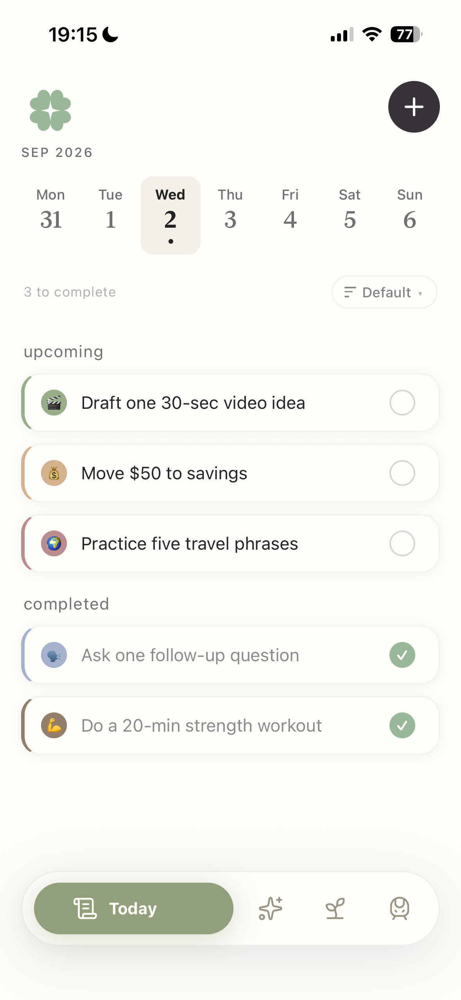
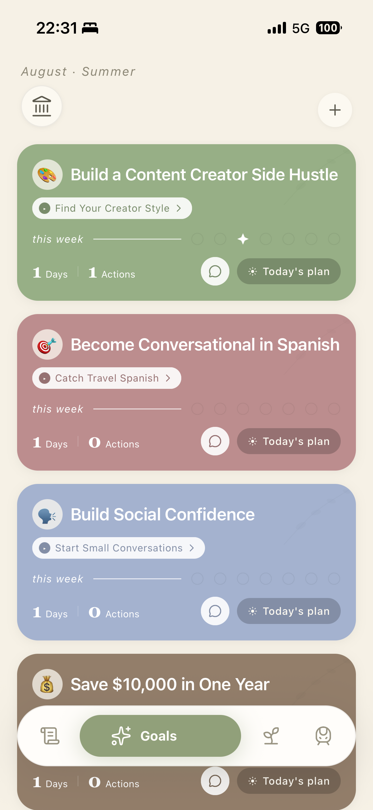
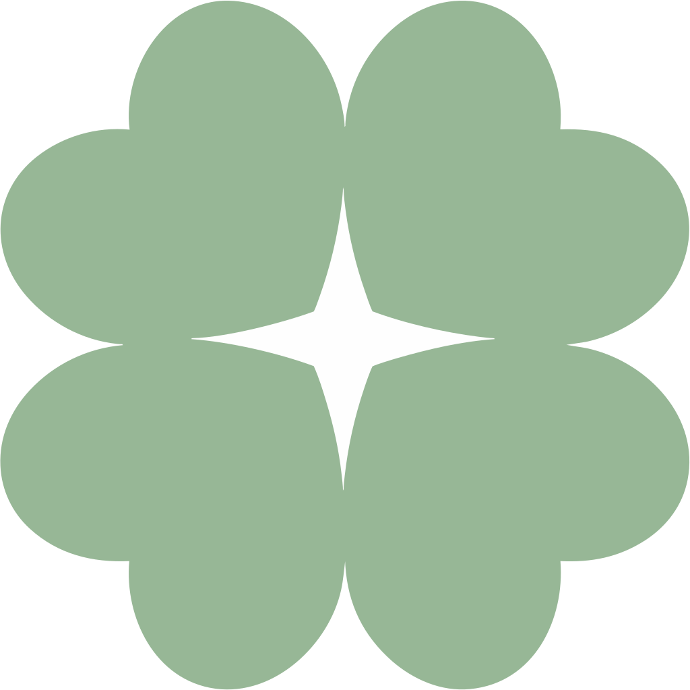
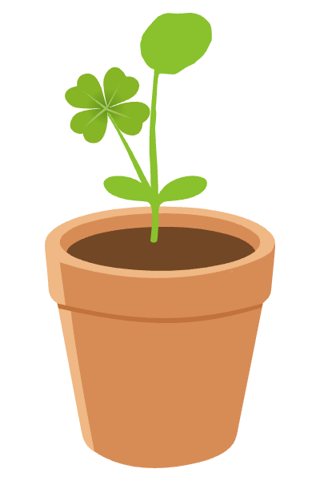

● A PAPER GARDEN FOR YOUR WISHES
Big wishes.
Small steps,
every day.
WishLeaf is a goal planner that helps you turn big goals into clear paths and small, doable steps for today. Adjust your plan as life changes, and keep moving at your own pace.
For your wishes. At your pace.


01 / A PLACE TO BEGIN
A big wish.
A small first step.
Somewhere between “one day” and today, there’s a path you can actually follow. WishLeaf helps you find it — then brings it down to one small thing you can do next.
02 / ROOM TO CHANGE
Life happens.
Your plan can bend.
A task feels too big. A week gets busy. The original plan stops fitting. Find a gentler way forward with suggestions, smaller steps, and a fresh approach.
03 / A RHYTHM OF YOUR OWN
A plan that grows
along with you.
What you do, how you feel, and the progress you make all help shape what comes next. Your plan becomes more personal as you explore what works for you.

WishLeaf’s planA little thoughtful guidanceown pace.
04 / SOMETHING TO GROW WITH
Small actions.
Living reminders.
While you work on your wishes, a quiet garden grows beside you. Your actions shape the water, nutrients, and sunlight each plant receives — and the way it grows.

Growing, in your own way.THERE’S NO PERFECT TIME TO BEGIN
Just a wish.
And one little step.
Your paper garden will be here soon.